Home
Collection
The Strongest
Discover the secrets to their power.
Gojo Satoru
Six eyes and Limitless user.
Learn more
Ryomen Sukuna
King of curses.
Learn more

Yuta Okotsu
Wielder of the Queen.
Learn more
Kenjaku
A curse of many faces.
Learn more